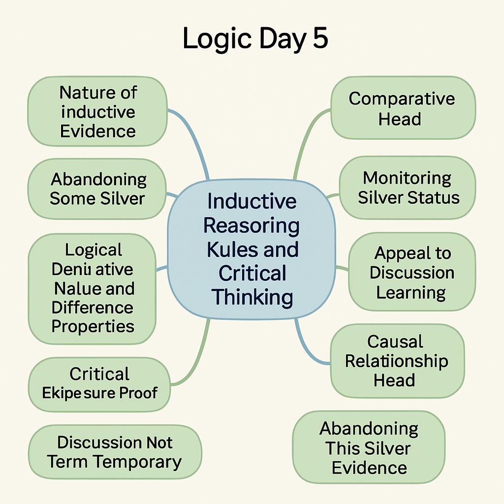

Course Objectives
- Understand the characteristics and applications of inductive reasoning
- Analyze the structure of analogical arguments and evaluate their strength
- Understand the principles of causal reasoning and Mill's methods
- Apply critical thinking skills to evaluate arguments and information
- Understand the relationship between scientific method and hypotheses
Inductive Reasoning Basics
Inductive reasoning is the process of reasoning from specific instances to general principles.
Characteristics:
- From specific to general
- Probability: The conclusion is only probably true, not necessarily true
- Uncertainty: Lower certainty of conclusion
- New information: The conclusion contains new information not present in the premises
Example of Inductive Reasoning
All observed ravens are black. (Specific instances)
Therefore, all ravens are black. (General principle)
In this example, the conclusion "all ravens are black" is derived from the premise "all observed ravens are black." This conclusion is probably true, but not necessarily true, because we cannot observe all ravens.
Strength of Inductive Reasoning
The strength of inductive reasoning depends on the following factors:
- Sample size: The larger the sample, the stronger the reasoning
- Sample representativeness: The more representative the sample, the stronger the reasoning
- Lack of counterexamples: The fewer counterexamples, the stronger the reasoning
- Scope of conclusion: The narrower the scope of the conclusion, the stronger the reasoning
Argument by Analogy
Argument by analogy is a method of reasoning based on the similarities between two or more things.
Structure of argument by analogy:
- A has properties P, Q, R, S...
- B has properties P, Q, R...
- Therefore, B probably also has property S
Example of Argument by Analogy
Earth has an atmosphere, water, suitable temperature, and life.
Mars has an atmosphere (though thin), water (though frozen), and relatively suitable temperature.
Therefore, Mars might also have life.
Evaluating the Strength of Arguments by Analogy
The strength of an argument by analogy depends on the following factors:
- Number of similarities: The more similarities, the stronger the argument
- Relevance of similarities: The more relevant the similarities are to the conclusion, the stronger the argument
- Number of differences: The fewer differences, the stronger the argument
- Relevance of differences: The less relevant the differences are to the conclusion, the stronger the argument
- Scope of conclusion: The narrower the scope of the conclusion, the stronger the argument
Causal Reasoning
Causal reasoning is reasoning about cause-and-effect relationships between events.
Basic concepts of causality:
- Cause: An event or condition that brings about an effect
- Effect: An event or state brought about by a cause
- Necessary condition: A condition without which the effect would not occur
- Sufficient condition: A condition which, if present, guarantees the effect will occur
Common Fallacies in Causal Reasoning
- Post hoc fallacy: Assuming that if B follows A, then A caused B
- Correlation fallacy: Assuming that if A and B are correlated, then A caused B (or B caused A)
- Ignoring common cause: Ignoring that A and B might have a common cause C
- Ignoring complex causality: Ignoring that causality might be complex, involving multiple factors
Mill's Method of Agreement
If in all cases where an effect occurs, there is a single common factor, then that factor might be the cause of the effect.
Case 1: A, B, C are present, effect X occurs
Case 2: A, D, E are present, effect X occurs
Case 3: A, F, G are present, effect X occurs
Therefore, A might be the cause of X
Mill's Method of Difference
If two cases differ only in one factor, and the effect is present in one case but not the other, then that factor might be the cause of the effect.
Case 1: A, B, C are present, effect X occurs
Case 2: B, C are present (without A), effect X does not occur
Therefore, A might be the cause of X
Mill's Method of Concomitant Variation
If variations in a factor are accompanied by variations in the effect, then that factor might be the cause of the effect.
Case 1: A has intensity 1, effect X has intensity 10
Case 2: A has intensity 2, effect X has intensity 20
Case 3: A has intensity 3, effect X has intensity 30
Therefore, A might be the cause of X
Mill's Method of Residues
If certain factors are known to cause part of an effect, then the remaining part of the effect might be caused by other factors.
Effect X has parts X1 and X2
A is known to cause X1
Therefore, other factors (such as B) might cause X2
Critical Thinking
Critical thinking is a rational, reflective way of thinking that helps us make more informed judgments and decisions.
Basic steps of critical thinking:
- Identify the problem: Clarify the problem you want to solve or the argument you want to evaluate
- Gather information: Look for relevant facts, data, and perspectives
- Evaluate evidence: Check the reliability and relevance of the evidence
- Consider alternative explanations: Think about other possible explanations or perspectives
- Form a conclusion: Draw a conclusion based on evidence and reasoning
Attitudes of Critical Thinking
- Open-mindedness: Willingness to consider different viewpoints and possibilities
- Curiosity: Maintaining curiosity about the nature and causes of things
- Skepticism: Not readily accepting unverified claims
- Humility: Acknowledging the limitations of one's knowledge and understanding
- Systematicity: Thinking about problems in an organized way
Scientific Method and Hypotheses
The scientific method is a systematic approach to acquiring knowledge and solving problems.
Steps of the scientific method:
- Observation: Collect data about a phenomenon
- Question: Formulate a question based on observations
- Hypothesis: Propose a possible explanation
- Prediction: Predict what should be observed if the hypothesis is true
- Testing: Test the prediction through experiment or further observation
- Analysis: Analyze the test results
- Conclusion: Draw a conclusion, supporting or rejecting the hypothesis
- Repetition: Repeat the process to verify the results
Characteristics of Hypotheses
A good scientific hypothesis should have the following characteristics:
- Falsifiability: It can be proven false
- Explanatory power: It can explain observed phenomena
- Simplicity: It is as simple as possible
- Consistency: It is consistent with known facts and theories
- Testability: It can be tested through experiment or observation
Logical Reasoning in the Scientific Method
The scientific method combines deductive and inductive reasoning:
- Deductive reasoning: Deriving predictions from hypotheses (if the hypothesis is true, then the prediction is true)
- Inductive reasoning: Deriving general principles or theories from observations and experimental results
Course Summary
In today's course, we learned:
- The characteristics and applications of inductive reasoning
- The structure and evaluation methods of analogical arguments
- The principles of causal reasoning and common fallacies
- Mill's five methods: method of agreement, method of difference, method of concomitant variation, method of residues, and joint method
- The basic steps and attitudes of critical thinking
- The steps of scientific method and characteristics of hypotheses
Mind Map Overview
